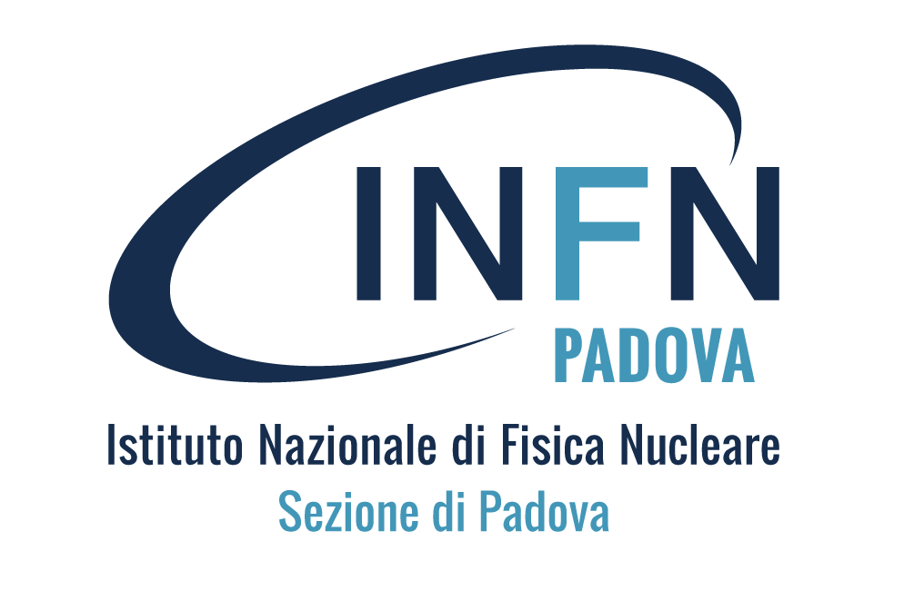
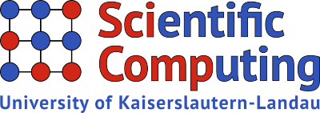
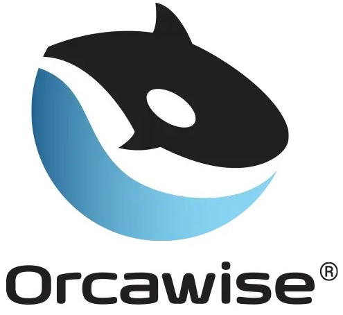

Relevant Experiences
Junior Researcher (research fellowship)
INFN & RPTU  
Year: 2024 - Present
- Utilized advanced machine learning and deep learning methodologies to enhance the efficiency and accuracy of particle detectors.
- Developed and implemented algorithmic differentiation in combination with machine learning approaches in the context of calorimetry design.
Junior Data Scientist (internship)
Orcawise 
Year: 2023 - 2024
- Data Engineering Transformation: Applied advanced techniques to extract and feed page data into the relation extraction model, enhancing its ability to derive meaningful insights.
- Real-time Predictive Analytics: Implemented live analytics for swift decision-making leveraging NLP pipelines.
- Custom Model Fine-tuning: Specialized in refining pre-trained models (BERT, Stanford OpenIE), for Named Entity Relation (NER) applications.
Laboratory Research Assistant (master's thesis)

Neurochip Lab, department of Biomedical Sciences, University of Padova
Year: 2023
- Stimulated biological neuronal network behavior by designing and implementing computational dynamic model incorporating standard Izhikevich model.
- Presented distinctions between wild-type and mutant Kv1.3 channels through deployment of data visualization techniques, encompassing Sigmaplot software.
Laboratory Research Assistant (bachelor's thesis)
Department of Biophysics and Cell Biology, University of Debrecen
Year: 2018 - 2020
- Enabled decision-making by analysing unprocessed data from recorded cell lines and using Excel spreadsheets and Google Sheets to extract valuable insights.
- Presented distinctions between wild-type and mutant Kv1.3 channels through deployment of data visualization techniques, encompassing Sigmaplot software.